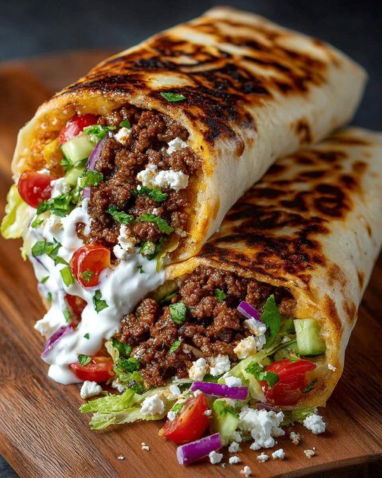

Mediterranean Beef Wraps with Lemon-Feta Sauce

- Meal
- Dinner
- Serves
- 6
- Protein
- beef
- Cook
- stovetop · 20 min active / 30 min total · easy
- Make-ahead / leftovers
- no / yes
- Mediterranean
- no
- WW tier
- moderate
- Status
- Trying out (probation)
Flavorful Kitchen Adventures' Mediterranean beef wraps: spiced ground beef in flour tortillas with lettuce, tomato, and cucumber, finished with a lemon-feta yogurt sauce. Not Beef Kofta with Roasted Vegetables (meatballs + sheet-pan veg over rice) and not Greek Turkey Burgers (turkey patties on buns). No fish or shellfish — no fish-free swap needed.
Amounts below are scaled ×1.5 to serve 6; the source amount (serves 4) is in brackets.
Ingredients
Beef
- 1.5 lb ground beef [1 lb]
- 3 garlic cloves, minced [2]
- 1 1/2 tsp paprika [1 tsp]
- 1 1/2 tsp cumin [1 tsp]
- 3/4 tsp oregano [1/2 tsp]
- Salt and pepper
Lemon-feta sauce
- 3/4 cup crumbled feta [1/2 cup]
- 1/2 cup plain Greek yogurt [1/3 cup]
- 1 1/2 Tbsp lemon juice [1 Tbsp]
- 1 1/2 tsp honey [1 tsp]
Wraps
- 6 large flour tortillas [4]
- 1 1/2 bags shredded lettuce [1 bag]
- 1 1/2 cups cherry tomatoes, halved [1 cup]
- 3/4 cucumber, diced [1/2]
- Red onion, sliced (optional)
Method
- Brown the beef and drain it. Stir in the garlic and spices and cook 2 minutes.
- Stir the sauce ingredients together, mashing the feta with a fork.
- Warm the tortillas. Fill with beef, lettuce, tomato and cucumber, drizzle with sauce and roll up.
- Optional: toast the wraps seam-side down in a dry skillet 2 minutes per side.
Notes
- Scaled ×1.5 from Flavorful Kitchen Adventures' serves-4 post. Source amounts in brackets.
- Simplified from the source: cut the mayo (yogurt covers it), extra garlic in the sauce, cheddar/mozzarella, parsley, and the cooking oil.
- House notes (do not change the recipe): kid-buildable wrap bar — set out beef, lettuce, tomato, cucumber, sauce, and optional red onion so everyone builds their own. Whole-wheat tortillas optional if you have them. Ground beef, feta, and Greek yogurt: Sam's or Aldi. No fish or shellfish in the recipe — no fish-free swap.
- Red meat — counts toward the ≤2 red/processed cap.
- Mediterranean ✗: red meat (#2 miss), no olive oil as the primary fat (browned dry after the oil cut; sauce is yogurt/feta) (#1 miss), vegetables in the wrap clear (#3), flour tortillas are refined (#4 miss unless whole-wheat is used — still only 2 of 4). moderate (lean ground beef + yogurt sauce + veg-forward wrap help; feta and flour tortillas keep it off light; not cream- or fry-heavy enough for heavy).